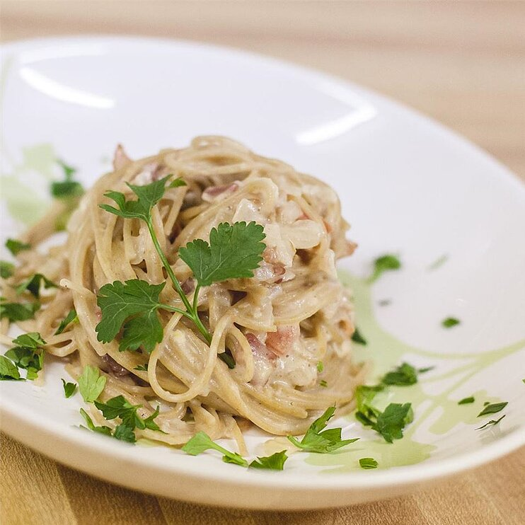

Carbonara Recipe

Quick way to make a really tasty carbonara-style pasta sauce. Serve over cooked pasta.
Ingredients
- 6 ounces bacon, diced
- 1 large onion, diced
- 1 tablespoon minced garlic
- 1 (12 ounce) jar Alfredo sauce
- ½ cup water
- 3 roma (plum) tomatoes - halved, seeded, and chopped
Steps
- Cook bacon in a large skillet over medium-high heat until evenly browned, about 10 minutes. Drain all but about 2 tablespoons bacon drippings from skillet. Cook and stir onion with bacon in reserved drippings until onion is translucent, 5 to 10 minutes. Add garlic; cook and stir until fragrant, 2 minutes.
- Pour Alfredo sauce into onion-bacon mixture; rinse jar with the water and pour into skillet. Stir sauce with a wooden spoon, thoroughly scraping any brown bits of food from bottom of the skillet. Bring sauce to a simmer; add tomatoes. Simmer sauce until flavors blend, about 5 minutes.